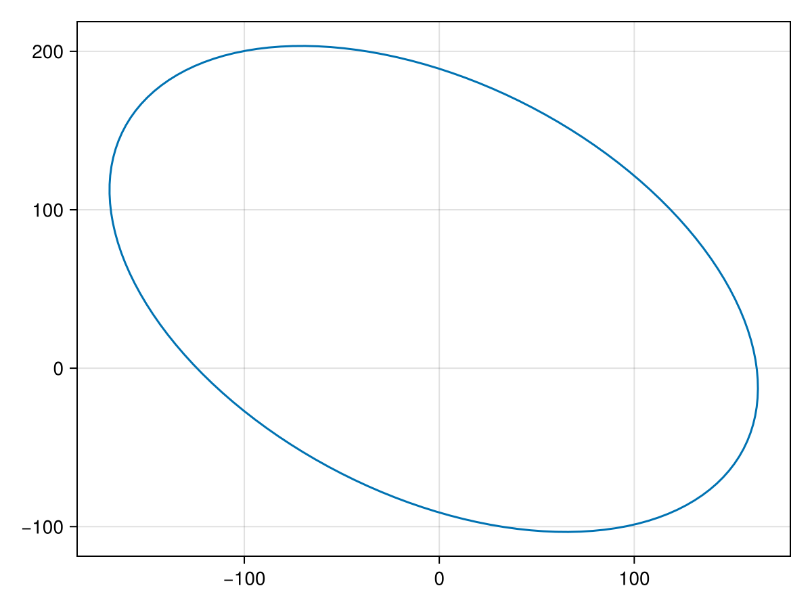
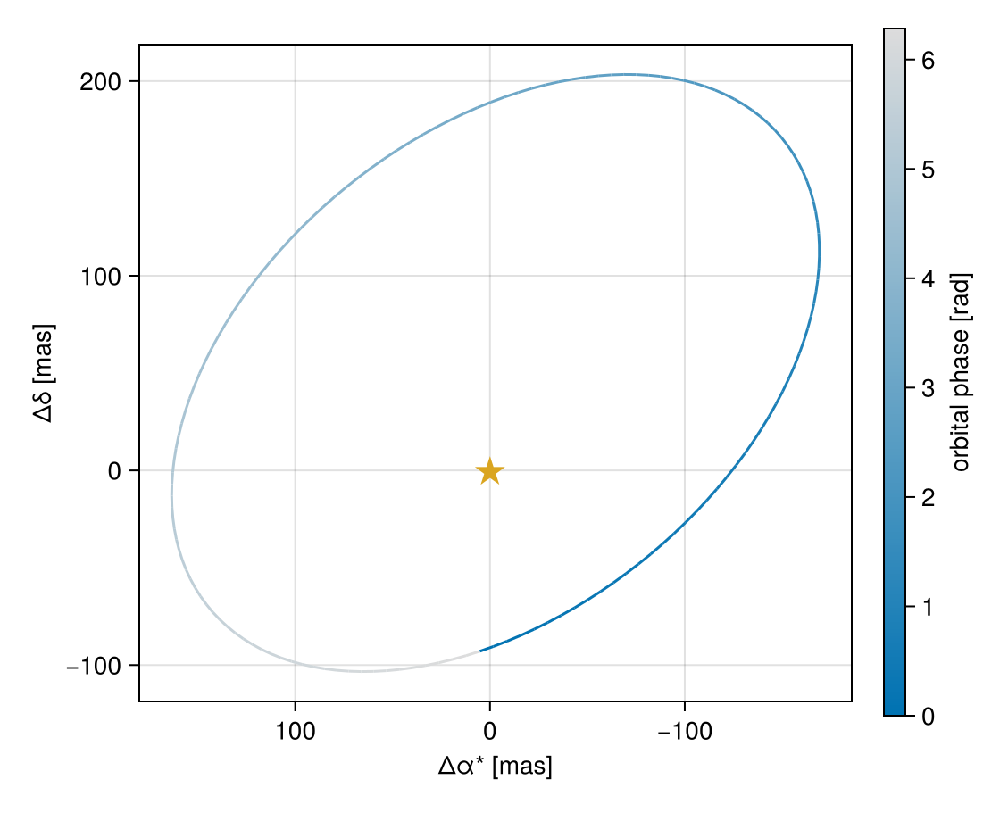
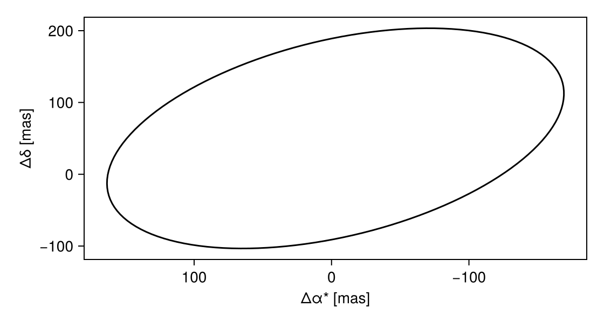
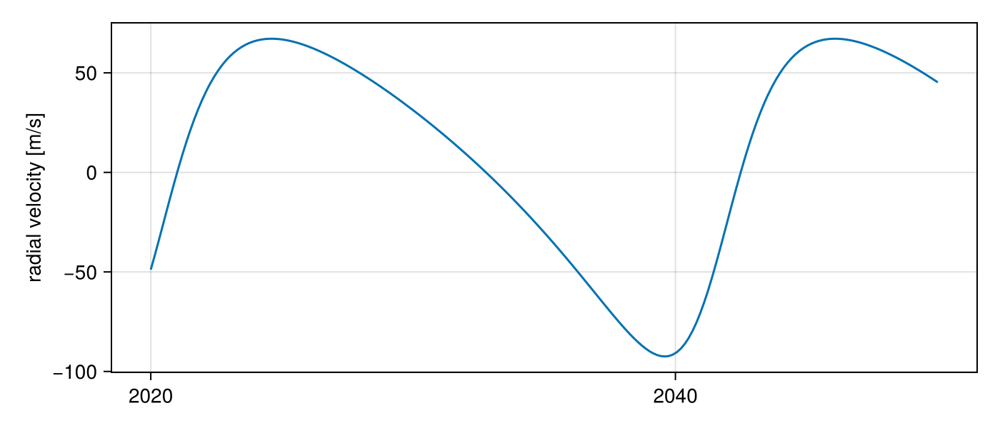
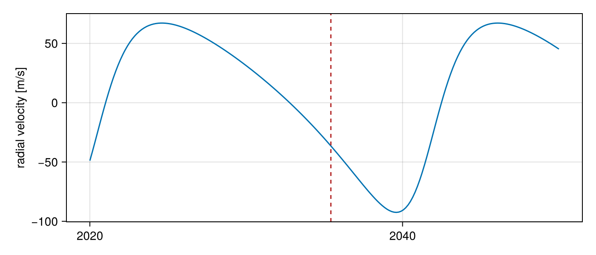
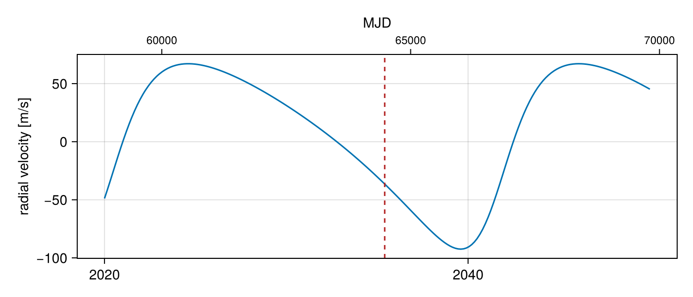
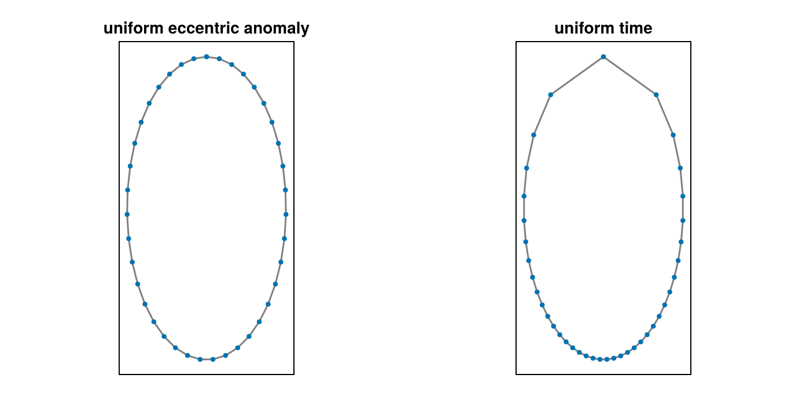
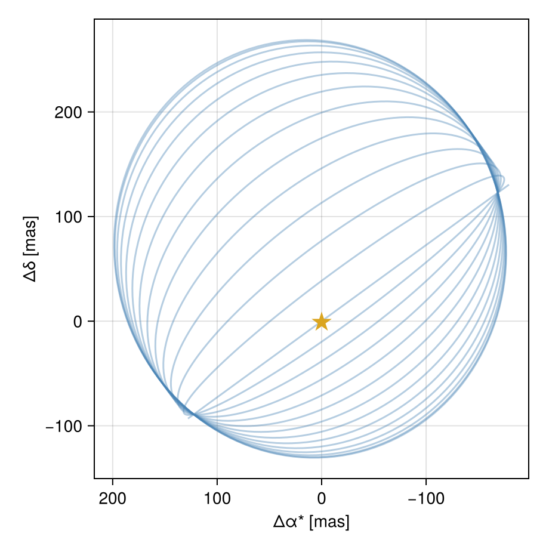

Plotting
PlanetOrbits has a Makie extension. Install a Makie backend — CairoMakie for publication-quality static figures, GLMakie for an interactive window — and the extension loads itself alongside it. There is no separate plotting package to add.
using PlanetOrbits
import PlanetOrbits as PO
using CairoMakieThe extension is deliberately small. It adds four things — quick-look plots, phase-coloured orbit tracks, calendar-date epoch axes, and a house theme — and then gets out of the way. Everything past that is plain Makie applied to the observables from Introduction, so anything you can draw with Makie you can draw here.
A system to work with: a 10-Jupiter-mass companion on a moderately eccentric, inclined orbit around a 1.1 M⊙ star at 40 pc (plx = 25 mas).
A = PO.Body(mass=1.1, name=:A)
b = PO.Body(mass=10mjup, name=:b)
sys = PO.System((A, b), (
PO.Orbit(b, about=A; a=8.0, e=0.35, i=0.9, ω=1.1, Ω=2.2, tp=58849.0),
); plx=25.0)System{2 bodies, 1 orbits, Float64} — two-body
frame: PlanetOrbits.Parallax{Float64}(25.0, 25.0)
bodies:
A mass = 1.1 M⊙
b mass = 0.00954594 M⊙
orbits:
1: :b about :A
a = 8.0 AU P = 7846.23 d (= 21.4818 yr) e = 0.35
i = 0.9 rad ω = 1.1 rad Ω = 2.2 rad tp = 58849.0 MJD
M = 1.1095459 M⊙
Quick looks
lines and scatter accept a system plus the two references you want the track of, in the same (of, relative_to) order the observables use:
lines(sys, :b, :A)
For a two-body system there is only one thing that could be meant, so the references can be dropped:
lines(sys)
The track is the full closed orbit, sampled by orbit_track_epochs (see Choosing epochs below). Angular observables are used when the system has a parallax and physical ones (AU) when it does not — so a frameless system plots in AU without further ceremony.
These quick looks are meant for the REPL, and are deliberately unopinionated: they set no axis labels and do not flip the RA axis. For a figure you intend to keep, use orbitlines!.
Orbit tracks
orbitlines! draws the same track onto an axis you control, coloured by orbital phase, and sets the sky-plane orientation for you (right ascension increasing to the left):
fig = Figure(size=(560, 460))
ax = Axis(fig[1, 1];
xlabel=plotlabel(raoff), ylabel=plotlabel(decoff),
aspect=DataAspect())
p = orbitlines!(ax, sys, :b, :A)
scatter!(ax, [0], [0]; marker='★', markersize=22, color=:goldenrod)
Colorbar(fig[1, 2], p; label="orbital phase [rad]")
fig
The colour is mean-anomaly phase, running from 0 at periastron round to 2π one period later. Because phase advances uniformly in time, the colour is a direct readout of where the companion is at a given fraction of its period — the gradient is stretched out over the slow, wide part of the orbit and compressed near periastron, and the abrupt colour change marks periastron itself. Pass colorbyphase=false for a plain line, and any other keyword through to lines!.
plotlabel supplied those axis labels — see Labels and units.
The house theme
orbit_theme is the look used across PlanetOrbits and Octofitter figures. It is intentionally minimal — it turns grid lines off and leaves everything else to Makie, so it composes with your own theme rather than overriding it.
with_theme(orbit_theme()) do
fig = Figure(size=(560, 300))
ax = Axis(fig[1, 1]; xlabel=plotlabel(raoff), ylabel=plotlabel(decoff))
orbitlines!(ax, sys, :b, :A; colorbyphase=false, color=:black)
fig
end
Use set_theme!(orbit_theme()) to apply it for a whole session.
Time axes
Orbital epochs are Modified Julian Days, which nobody reads at a glance. MJDConversion is a Makie dimension conversion: the data stay plain Float64 MJDs, but the ticks are calendar dates, recomputed as you zoom.
epochs = plot_epochs(sys, mjd("2020-01-01"), mjd("2050-01-01"))
traj = orbitsolve(sys, epochs)
rv = [radvel(sol, :A, barycentre(sys)) for sol in traj]
fig = Figure(size=(700, 300))
ax = Axis(fig[1, 1]; ylabel=plotlabel(radvel), dim1_conversion=MJDConversion())
lines!(ax, epochs, rv)
fig
That is the star's reflex velocity about the system barycentre — the quantity a radial-velocity survey measures.
Date and DateTime values plot straight into such an axis. The exception is the single-argument helpers vlines! and hlines!, which bypass Makie's dimension conversions entirely; convert those yourself with mjd:
vlines!(ax, mjd("2035-06-01"); color=:firebrick, linestyle=:dash)
fig
If you also want the raw numbers, add_mjd_axis! adds a companion axis in the same layout cell, linked to the first:
add_mjd_axis!(fig[1, 1], ax; position=:top)
fig
Choosing epochs
Two helpers generate epoch grids, and they answer different questions.
orbit_track_epochs traces one closed orbit, spaced uniformly in eccentric anomaly rather than in time. That puts points where the curvature is — densely around periastron, sparsely at apastron — so a highly eccentric track stays smooth with far fewer points than uniform time sampling would need:
ecc = PO.System((A, b), (
PO.Orbit(b, about=A; a=6.0, e=0.85, i=0.0, ω=0.0, Ω=0.0, tp=58849.0),
); plx=25.0)
n = 40
ts_ea = orbit_track_epochs(ecc; n)
ts_t = range(periastron(ecc), periastron(ecc) + period(ecc), length=n)
fig = Figure(size=(700, 340))
for (j, (ts, title)) in enumerate(((ts_ea, "uniform eccentric anomaly"),
(ts_t, "uniform time")))
ax = Axis(fig[1, j]; title, aspect=DataAspect(), xreversed=true)
hidedecorations!(ax)
t = orbitsolve(ecc, collect(ts))
xs = [raoff(s, :b, :A) for s in t]
ys = [decoff(s, :b, :A) for s in t]
lines!(ax, xs, ys; color=:grey)
scatter!(ax, xs, ys; markersize=6)
end
fig
Both panels use 40 points. Uniform time spends nearly all of them on the slow outer arc and cuts the periastron passage into a corner.
plot_epochs answers the other question — sampling a span of time for a model curve, as the radial-velocity figure above did. It allocates points per hierarchy row, so a short-period inner orbit is resolved without inflating the grid for a wide outer one:
length(plot_epochs(sys, mjd("2020-01-01"), mjd("2050-01-01")))240orbit_phase gives the mean-anomaly phase of a row at an epoch, in [0, 2π); it is what orbitlines! colours by, and what you want for phase-folding radial velocities.
orbit_phase(sys, mjd("2035-06-01"))4.508452522170858Unbound orbits have no period, so orbit_track_epochs and orbit_phase have nothing to close or fold; sample a time span with range instead.
Labels and units
plotinfo is a small resolver table mapping each observable function to how it should be displayed. It carries no dependency on any plotting package, which is why the Makie extension, Octofitter's plot layer, and your own scripts can all share it instead of each keeping a private dictionary of axis labels.
plotinfo(posangle)(label = "position angle", unit = "rad", flip = false, wrap = 6.283185307179586)flip marks the RA-like axes that increase leftward on the sky; wrap marks the quantities that live on a circle. plotlabel is the common case, rendering label and unit into an axis label:
plotlabel.((raoff, decoff, radvel, projectedseparation))("Δα* [mas]", "Δδ [mas]", "radial velocity [m/s]", "separation [mas]")paraminfo is the equivalent table for parameters rather than observables — the element keywords Orbit accepts, plus frame variables. It is what corner plots and posterior summary tables label their axes from, and it flags the radian-valued parameters that are conventionally displayed in degrees:
(paraminfo(:a), paraminfo(:Ω))((label = "semi-major axis", unit = "au", angle = false), (label = "position angle of\nascending node", unit = "°", angle = true))paraminfo returns nothing for a name it does not know, so a caller can fall back to the bare symbol.
Many orbits at once
There is no special API for plotting a family of orbits — posterior draws, a grid of trial inclinations — because plain Makie already handles it. Build the systems and draw them onto one axis:
fig = Figure(size=(460, 460))
ax = Axis(fig[1, 1]; xlabel=plotlabel(raoff), ylabel=plotlabel(decoff),
aspect=DataAspect(), xreversed=true)
for i in range(0.0, π/2, length=14)
s = PO.System((A, b), (
PO.Orbit(b, about=A; a=8.0, e=0.35, i=i, ω=1.1, Ω=2.2, tp=58849.0),
); plx=25.0)
lines!(ax, s; color=(:steelblue, 0.4))
end
scatter!(ax, [0], [0]; marker='★', markersize=22, color=:goldenrod)
fig
Reduced opacity is worth doing by hand here: overlap density is the thing you actually want to read off a posterior draw plot.
Animation
Makie's record needs a trajectory and a loop:
ts = orbit_track_epochs(sys; n=90)
traj = orbitsolve(sys, ts)
xs = [raoff(s, :b, :A) for s in traj]
ys = [decoff(s, :b, :A) for s in traj]
fig = Figure(size=(400, 400))
ax = Axis(fig[1, 1]; aspect=DataAspect(), xreversed=true,
xlabel=plotlabel(raoff), ylabel=plotlabel(decoff))
lines!(ax, xs, ys; color=:grey)
scatter!(ax, [0], [0]; marker='★', markersize=22, color=:goldenrod)
pos = Observable([Point2f(xs[1], ys[1])])
scatter!(ax, pos; markersize=14, color=:steelblue)
record(fig, "orbit-animation.mp4", eachindex(ts); framerate=30) do k
pos[] = [Point2f(xs[k], ys[k])]
end